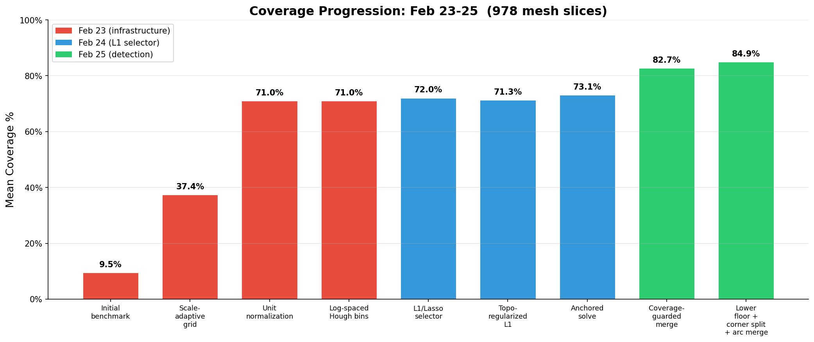
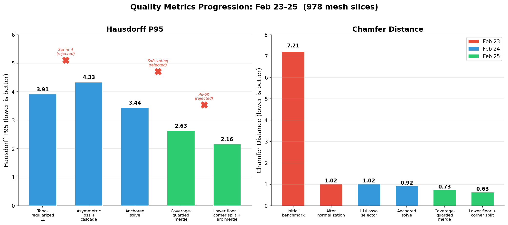
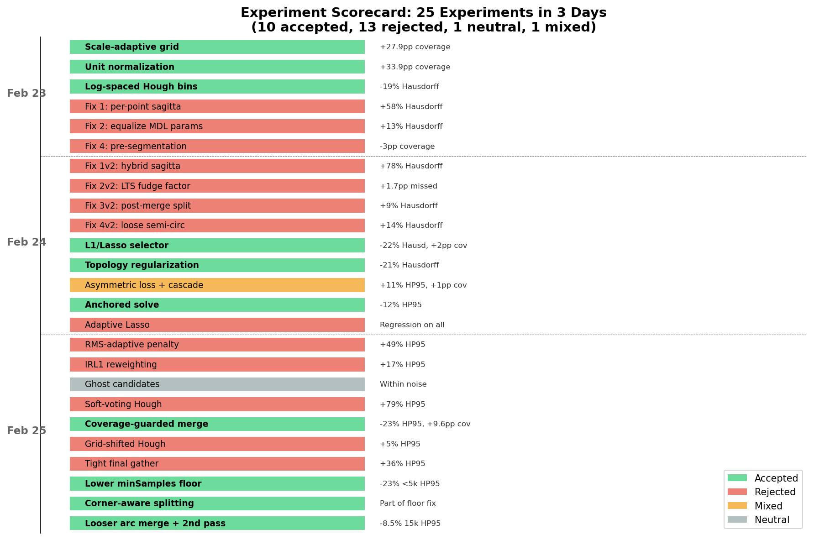
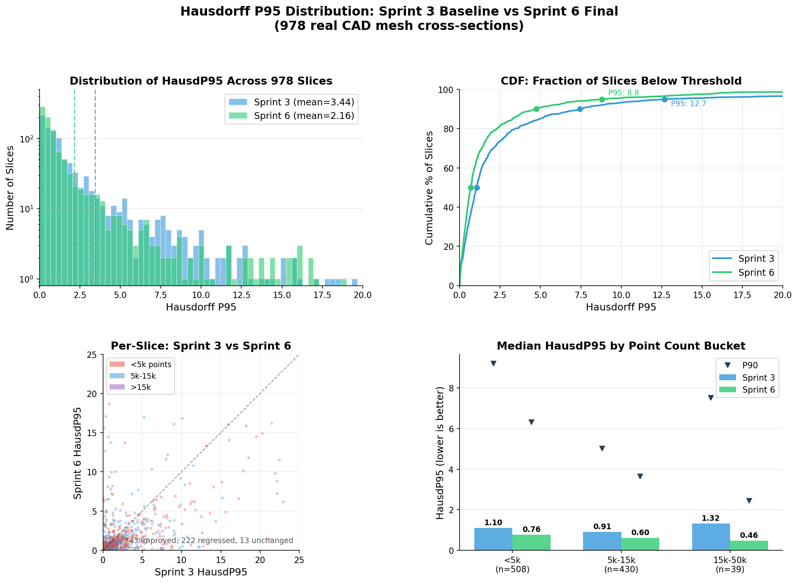
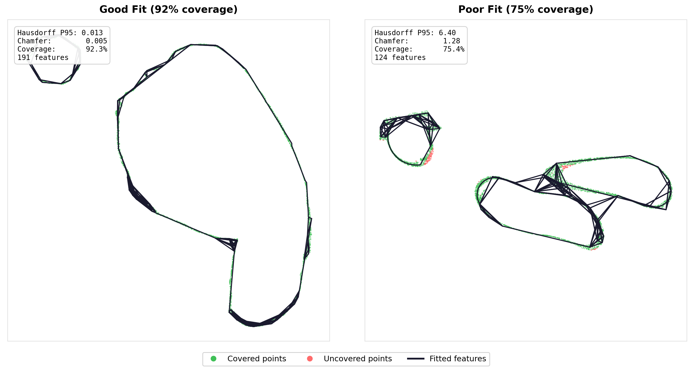

Three Days, 25 Experiments: Optimizing a Sketch Reconstruction Pipeline
February 25, 2026
I’ve been running a workflow experiment for the last few months that I think is worth writing up, not because the results are earth-shattering, but because the process turned out to be more interesting than I expected. The short version: I pointed two AI systems at a well-defined optimization problem—one analyzing data and proposing strategies, the other implementing and benchmarking them—and ran 25 experiments over three days. 10 accepted, 13 rejected, 1 neutral, 1 mixed. Coverage went from 9.5% to 84.9%, Chamfer distance dropped 91%.
The interesting part isn’t the numbers. It’s what the rejection pattern revealed about the pipeline’s architecture.
The Problem and the Process
The codebase is a sketch reconstruction pipeline—about 12,000 lines of C++17 that takes noisy 2D point clouds (sampled from cross-sections of real CAD meshes) and reconstructs clean engineering sketches: line segments, circular arcs, connected paths, geometric constraints. The pipeline has four stages: Hough transform detection, L1/Lasso feature selection, topology recovery, and constraint enforcement. It runs against a benchmark of 978 slices from real CAD models, ranging from 200 to 50,000+ points per slice.
The workflow was straightforward. Gemini 2.5 Pro (Deep Think) received the full benchmark data, per-bucket breakdowns, and the code architecture, then produced detailed implementation plans with 2–4 strategies per sprint. Claude Code implemented them, ran the full 978-slice benchmark, did ablation testing (disable each strategy independently, re-run the benchmark), and wrote up a report. Each sprint cycle ran 1–3 hours wall-clock, and I was mostly checking in periodically to move reports between the two systems and sanity-check the direction.
Day 1: Infrastructure (9.5% → 71% Coverage)
The first benchmark run produced 9.5% mean coverage. The pipeline had been tuned on synthetic data, and it turns out that when your synthetic bounding box is ~2 units and your real meshes range from 20 to 1100 units, a hardcoded spatial index cell size of 0.01 is catastrophically wrong. Every cell had 0–1 points, noise estimation returned a fallback value, and the Hough accumulator allocated 220,000 distance bins. Nothing got detected.
Three fixes landed sequentially: a scale-adaptive grid (+28pp coverage), unit normalization of all input points (+34pp), and log-spaced Hough radius bins (−19% Hausdorff, −18% Chamfer). Three other arc detection tweaks were tried and rejected—they all made things worse. A pattern that would repeat.

Day 2: Replacing the Selector
The existing feature selector used greedy initialization plus simulated annealing. Deep Think proposed replacing it with an L1/Lasso formulation: build a coverage matrix where K[i,j] = 1 if point i is within tolerance of candidate j, then solve a penalized least-squares problem with L1 sparsity and a graph Laplacian term for topology regularization.
The L1 selector was an immediate win: −22% Hausdorff, −16% Chamfer, +2pp coverage, and 70x faster than SA. It took another sprint to get the Laplacian regularization right (degree normalization + anchored solving so good features from Phase 1 couldn’t be “poisoned” by bad neighbors in Phase 2), but after that the selector was well-calibrated.
What didn’t work on Day 2: four more arc detection variants (all rejected—again, each one tried to be more precise about what counted as a valid arc), and adaptive Lasso (scaling the L1 penalty by inverse evidence—too aggressive, killed marginal-but-correct features).
Day 3: The Pattern Crystallizes
This is where it gets interesting.
Sprint 4: Trying to Prune (All Rejected)
Deep Think proposed three selection-phase improvements: RMS-adaptive penalty, iterative reweighted L1 (approximate L0 sparsity), and endpoint-anchored residuals. Claude Code implemented all three, ran the benchmark, ran ablations.
Everything got worse. The iterative reweighting was the biggest offender—it killed 58 of 98 features on average. The reweighting penalty was too aggressive for a dataset where many correct features have fractional weights due to overlapping coverage.
The report back to Deep Think was blunt: stop trying to prune features. The selector is correct. The problem is detection recall.
Sprint 5: Detection Improvements (Surprise Ablation Result)
Deep Think pivoted to three detection-phase strategies: ghost candidates (analytic bridging between dangling endpoints), soft-voting Hough (Gaussian-weighted accumulator), and coverage-guarded merging.
Ablation revealed a surprise: soft-voting Hough was catastrophic. It over-consolidated Hough peaks, destroying candidate diversity. The L1 solver needs many overlapping candidates to choose from; Gaussian blurring merged adjacent peaks into single compromise positions that didn’t fit anything well. Disabling soft-voting alone produced the best results of any sprint: −23% Hausdorff P95, −21% Chamfer, +9.6pp coverage.
Sprint 6: Targeting the Weak Bucket
The <5k-point bucket (508 slices, 52% of the dataset) was still the weakest. Deep Think prescribed four strategies; Claude Code implemented all four, then ran systematic ablation—disable each individually.
Two of the four hurt. Tightening the normal threshold from cos(15°) to cos(5°) starved features of legitimate inliers—in a noisy point cloud, normals have 2–5° of noise, and cos(5°) = 0.996 rejected real inliers. Grid-shifted Hough created near-duplicate peaks that confused the solver. The winning config was the two strategies that loosened constraints: lower acceptance floors for sparse clouds and relaxed arc merge gating.

The Unifying Principle

Over 25 experiments, a clean pattern emerged. Everything that helped made detection less selective—lower thresholds, looser merge gates, more candidates for the solver to evaluate. Everything that hurt tried to make detection or selection more selective—tighter normals, Gaussian blurring, iterative pruning, adaptive penalties. The arc detection variants that failed on Days 1 and 2 were all attempts to be more precise about what counted as an arc—same pattern.
The pattern has a clean explanation: in a detection → selection pipeline where the selector is a powerful convex solver, candidate recall dominates candidate precision. The L1 solver handles false positives cheaply—they just get weight zero. But features that never enter the candidate pool are unrecoverable. Every attempt to pre-filter or prune candidates was, in effect, doing a worse job than the solver would have done anyway, while also removing some correct features.
I’d bet this generalizes beyond sketch reconstruction. If you have a two-stage pipeline where the second stage is a well-formulated optimization, your instinct to “help” by cleaning up the first stage’s output is probably counterproductive. Give the optimizer more to work with, not less.
By the Numbers
| Metric | Day 1 Start | Day 3 End | Change |
|---|---|---|---|
| Coverage | 9.5% | 84.9% | +75pp |
| Chamfer | 7.21 | 0.63 | −91% |
| Hausdorff P95 | N/A | 2.16 | — |
| <5k Coverage | 8.4% | 81.9% | +73pp |
The most dramatic gains came from infrastructure—normalization alone was +34pp coverage. But the algorithmic improvements from Days 2–3 were what made the quality metrics usable. Chamfer dropped 40% and Hausdorff P95 dropped 37% after the infrastructure was already solid.
How the Distribution Shifted
The aggregate means tell one story, but the per-slice distributions show where the improvements actually landed.

The heavy tail compressed substantially—slices with near-perfect reconstruction (HP95 < 1.0) went from 479 to 611 (+28%), while poor reconstructions (HP95 > 10) dropped from 66 to 43 (−35%). The <5k-point bucket was the primary beneficiary, which makes sense—those were the slices most affected by detection threshold sensitivity.

The Workflow, Honestly
I want to be clear about what this was and wasn’t. This was a well-defined optimization problem with a clear objective function, a fast benchmark loop (~5 minutes per run), and a codebase that was already structured to accept the kinds of changes being proposed. The AI systems weren’t designing the architecture or figuring out what problem to solve—they were exploring a parameter and algorithm space within an existing framework.
That said, the throughput was genuinely surprising. 25 experiments with full ablation testing in three days is probably more than I would have gotten through myself in that time. The ablation discipline in particular—systematically disabling each change and re-running the full benchmark—is something I’d likely have skipped on at least half the experiments if I were doing it manually, because it’s tedious. And it turns out that’s exactly where the most valuable information was hiding. Without ablation, Sprint 5 would have shipped with soft-voting Hough enabled, and Sprint 6 would have included the tight normal threshold. Both would have degraded the final result.
The cycle of “analyst proposes, implementer tests, results feed back to analyst” worked well enough that I’m going to keep using it for this kind of bounded optimization work. It’s not going to replace thinking about architecture or figuring out what to build next. But for “here’s a pipeline, here’s a benchmark, make the numbers better”—it’s a good way to run experiments while I’m doing something else.